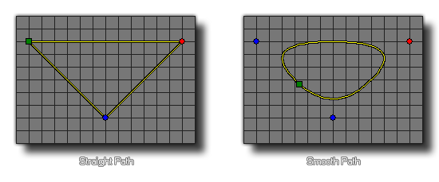

path_set_kind(index, val);
| Argument | Description |
|---|---|
| index | The index of the path to change. |
| val | The kind of the path, 0 for straight or 1 for smooth. |
Returns : N/A
This function can be used to set the kind of path that you wish the specified resource to be. This can be either a straight line path (set to 0) or a smoothed path (set to 1) in which case the path
precision has to be taken into account too (the precision can be set too using path_set_precision). This function changes the actual path resource,
and so will permanently affect how the path is used by all instances in the game from the moment the function is used until the end of the game.

path_set_kind(path0, 1);
This will set path0 to be a smoothed path.